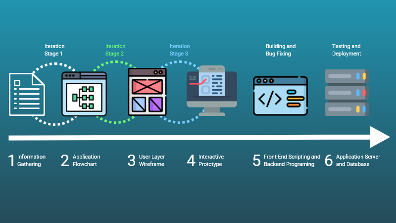

Software Assembly Line
2021-10-16

Do not use a cannon to kill a mosquito. ~Confucius
People tend to over-engineer solutions to small issues. Building web and mobile applications is seen as sophisticated.
Workers on corporate teams assume a simple solution either won't work and/or won't give them as much clout.
The more people involved in a project the slower it will progress. Because every individual has their own temperment, perception, expectations, communication skills, technical comprehension, and agenda. As the team grows so does the confusion as to the clarity of what the purpose of the project and its final form.
It makes sense to create an Software Assembly Line(SAL) to solve communcation issues and make the process more efficent. The six steps described below is a SAL built with human psychology in mind.
- Information Gathering Building software is like building a house. You need a list of required materials and a map.
At this step we gather the essential requirements of who the stakeholder is. Who the end users are, what pain-points the software addresses for them, and how it will function.
- Application Flowchart In this step we use the Information Gathering list of requirements to build an Application Flowchart (AFC)
There are two layers to the AFC. The User Layer and the Data Layer.
The User Layer is the the floor plan of a house. It shows every screen the user will see and how users will move from screen to screen. It gives a brief overview of what components are on each individual screen.
The Data Layer is a similar flowchart that shows were all the data flows from the user components to the decision making code. These are things like API calls, checked forms for validation, retriving data for forms, and dynamically loading components on a screen depending on a list of variables.
Many executives and engineers tend to confuse and combine these two layers. Or favor the Data Layer over the User Layer. They falsely assume the user layer is easier to change and so it becomes a secondary concern.
In fact the opposite is true. The User Layer is more time consuming to alter. So it makes sense to hammer out what components exist on each screen, how they look, and how they connect to each other. Then map out how the Data Layer will connect to the buttons, fields, forms, and tables.
-
User Layer Wireframe
-
Interactive Prototype
-
Front-End Scripting and Backend Programming
-
Application Server and Database